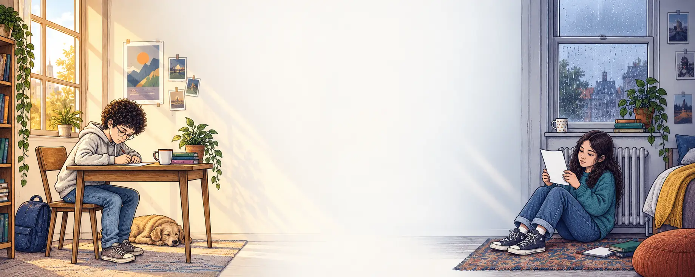

Um guia por habilidade. Cada um mostra o que a tarefa realmente pede, como se faz, e onde os alunos costumam perder ponto sem perceber. Com folhas de verdade, corrigidas.
One guide per skill. Each one shows what the task is really asking for, how it is done, and where students lose marks without noticing. With real sheets, marked up.

O Theo escreve em Vargem Grande Paulista. A Nina lê na Irlanda, três dias depois. Os guias são sobre essa distância.
Theo writes in Vargem Grande Paulista. Nina reads it in Ireland, three days later. The guides are about that distance.
Estes guias não substituem a aula.
Eles dizem em voz alta o que a aula supõe que você já sabe.
These guides do not replace the lesson.
They say out loud what the lesson assumes you already know.
Material de apoio para alunos e professores da EIC. Os conteúdos acompanham o programa de cada nível.
Support material for EIC students and teachers. The content follows the syllabus of each level.